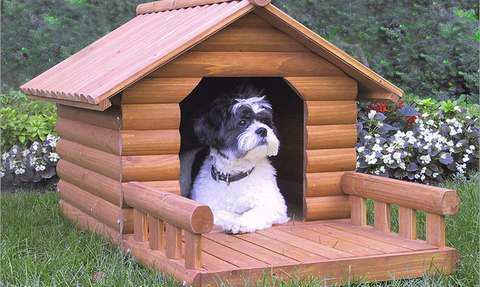

Nothing brings us more joy than finding a perfect human-dog pair! They will be there for you on your best days and on your worst, and will always be there to love you and make you happy. They are also a great catalyst in meeting other people since you'll be taking them to Zilker Park and attracting attention from other dog lovers.
I'm a lover of walks, other animals and belly rubs!
I'm over the hill but an easy and lovable companion! Perfect for a human who is perhaps retired and likes to stay home and relax. Great around children.
An amazing running and frisbee buddy, perfect for a human with an active lifestyle!
Well trained bundle of joy! Adopt me yarrrr.